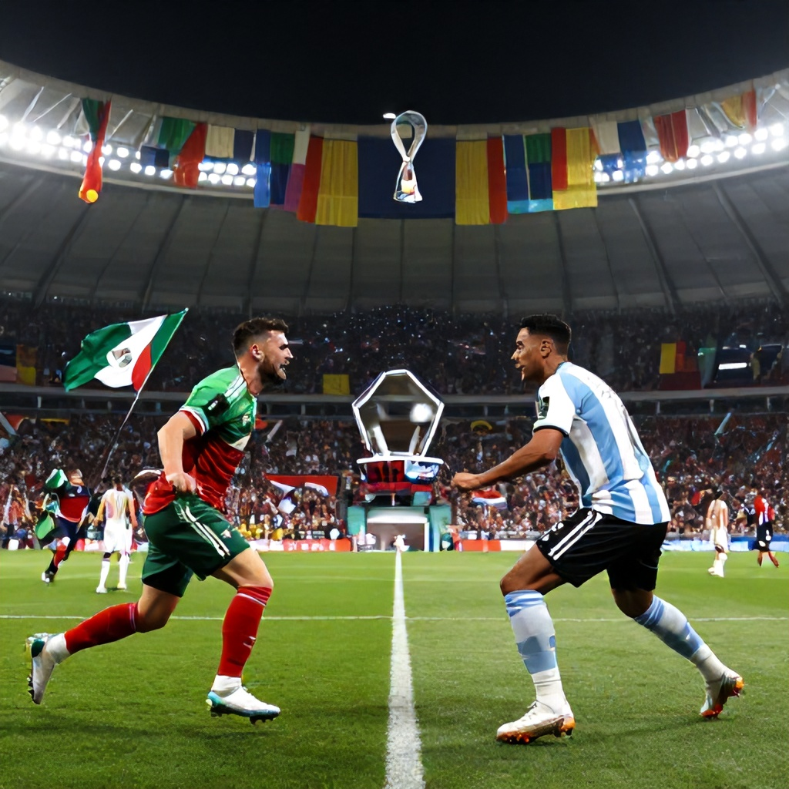

As the 2026 FIFA World Cup unfolds, one of the most anticipated potential matchups looms on the horizon: a clash between Mexico and Argentina in the knockout stages. While these two historic rivals have yet to face off in the group stage, their paths through the tournament could set up an electrifying showdown in the latter rounds.
Mexico’s Journey Begins
Mexico opens its World Cup campaign against South Africa on Thursday, June 11, 2026. With a strong home-field advantage and a roster built around experience and tactical discipline, Mexico enters the tournament as a serious contender. The team will look to build momentum against a South African side that has shown resilience in recent international competitions.
Following its opening match, Mexico faces Korea Republic on Thursday, June 18, 2026. This second group-stage encounter could be pivotal for the team’s progression, especially if they aim to secure a top-two finish in their group. A win over Korea Republic would significantly boost Mexico’s chances of advancing to the round of 16.
Argentina’s Opening Challenge
Argentina, meanwhile, begins its campaign against Algeria on Monday, June 15, 2026. Led by star players and supported by a strong tactical foundation, Argentina is expected to dominate early in the tournament. However, the Algerian side is known for its defensive resilience and counterattacking prowess, making this an important test for La Albiceleste.
What It Would Take for the Showdown
For Mexico and Argentina to meet in the knockout stages, both teams must navigate their respective groups successfully. Mexico would need to finish in first or second place in its group, while Argentina would require similar success in theirs. If both teams advance as group winners or runners-up, they could potentially face off in the round of 16 or later stages.
This hypothetical matchup would carry immense historical significance. Both nations have a rich footballing legacy, and their rivalry is one of the most intense in international football. A meeting between these two sides would be a celebration of Latin American footballing excellence and could define the trajectory of both teams’ World Cup campaigns.
Conclusion
While the group-stage fixtures haven’t placed Mexico and Argentina together, the potential for a thrilling knockout clash remains very much alive. As the 2026 FIFA World Cup progresses, fans can look forward to seeing whether these two powerhouse teams can overcome their group-stage challenges to meet in the knockout rounds. Whether it’s a quarterfinal or semifinal encounter, such a match would be one of the most anticipated fixtures of the tournament.